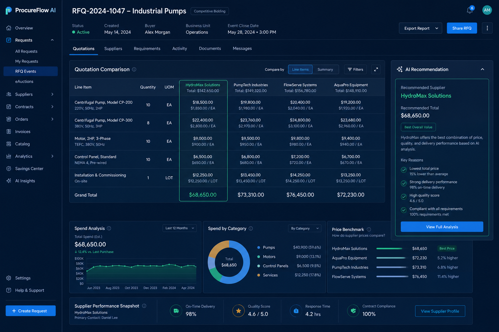

01FOUNDATION BUILD
ProcureFlow AI
Procurement intelligence, from quotation to decision.
An enterprise-style procurement platform that reads supplier quotations, compares offers and recommends the best option with transparent reasoning.
Spring BootReactPostgreSQLRAGPythonDocker